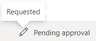
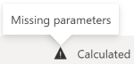
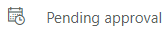
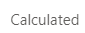
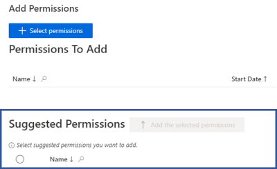
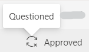
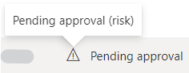

Automation Rule
Automation rules make automatic decisions instead of the reviewer on assignments that still need to be reviewed after a given waiting period.
There are distinct types of automation rules:
-
A composite role automation rule targets the assigned composite roles corresponding to a given composite role.
CompositeRoleAutomationRuleis equivalent toAutomationRulewith itsTypeset toCompositeRole, and requires specifying theCompositeRoleproperty; -
A single role automation rule targets the assigned single roles corresponding to a given single role.
SingleRoleAutomationRuleis equivalent toAutomationRulewith itsTypeset toSingleRole, and requires specifying theSingleRoleproperty; -
A resource type automation rule targets the assigned resource types corresponding to a given resource type.
ResourceTypeAutomationRuleis equivalent toAutomationRulewith itsTypeset toResourceType, and requires specifying theResourceTypeproperty; -
A category automation rule targets the assigned roles and resource types corresponding to a given category and a given entity type.
CategoryAutomationRuleis equivalent toAutomationRulewith itsTypeset toCategory, and requires specifying theCategoryandEntityTypeproperties; -
A policy automation rule targets the assigned roles and resource types corresponding to a given policy and a given entity type.
PolicyAutomationRuleis equivalent toAutomationRulewith itsTypeset toPolicy, and requires specifying thePolicyandEntityTypeproperties.
Remember, Netwrix recommends always using the typed syntax.
For example, you should always use SingleRoleAutomationRule, rather than AutomationRule with Type set to CompositeRole.
All these rules target the assignments which have a specific workflow state which is specified in the rule.
Automation rules can also specify dimensions.
One assignment should be involved in the decision of only one automation rule. However, one assignment can easily be targeted by several automation rules. In this case, the Provisioning Policy algorithm prioritizes the most specific rule.
For example, considering an assigned composite role, Identity Manager's algorithm prioritizes a composite role automation rule, before a category automation rule, before a policy automation rule.
After this prioritization, when an assignment is still targeted by several rules due to dimensions, then Identity Manager prioritizes a rule implying a decline decision.
Examples
In the following example, the two first rules are equivalent (except for the workflow state's value), but the second one shows the preferred syntax.
Code attributes enclosed with <> need to be replaced with a custom value before entering the script in the command line.
This rule approves all the assignments of the "FCT0070" composite role, which are waiting for the first of two required approvals for more than one hour:
<AutomationRule Type="CompositeRole" CompositeRole="FCT0070" WorkflowState="PendingApproval1" HoursToWait="1" Decision="Approve"/>
This rule approves all the assignments of the "FCT0070" composite role, which are waiting for the second of two required approvals for more than one hour:
<CompositeRoleAutomationRule CompositeRole="FCT0070" WorkflowState="PendingApproval2" HoursToWait="1" Decision="Approve"/>
This rule approves all the assignments of the "BO028" single role, which are waiting for their required approval for more than one hour:
<SingleRoleAutomationRule SingleRole="BO028" WorkflowState="PendingApproval" HoursToWait="1" Decision="Approve"/>
This rule approves all the assignments of the "SAB_User_NominativeUser" resource type, which are waiting for their required approval for more than one hour:
<ResourceTypeAutomationRule ResourceType="SAB_User_NominativeUser" WorkflowState="PendingApproval" HoursToWait="1" Decision="Approve"/>
This rule declines all the assignments to the entity type "Directory_User" concerning the "IT Administration" category, which are waiting for the first of two required approvals for more than one hour:
<CategoryAutomationRule Category="IT Administration" WorkflowState="PendingApproval1" HoursToWait="1" Decision="Decline" EntityType="Directory_User"/>
This rule declines all the assignments to the entity type "Directory_User" concerning the "Default" policy, which are found during a synchronization without a linked automatic rule, for more than one hour:
<PolicyAutomationRule Policy="Default" WorkflowState="Found" HoursToWait="1" Decision="Decline" EntityType="Directory_User"/>
This rule declines all the assignments to the entity type "Directory_User" concerning the "Default" policy, which are found during the first synchronization without a linked automatic rule, for more than one hour:
<PolicyAutomationRule Policy="Default" WorkflowState="Historic" HoursToWait="1" Decision="Decline" EntityType="Directory_User"/>
Properties
|
Property |
Type |
Description |
|---|---|---|
|
Category |
Int64 |
Identifier of the category targeted by the rule. |
|
CompositeRole |
Int64 |
Identifier of the composite role targeted by the rule. |
|
D0 |
Int64 |
Value of the dimension 0 (up to 127) that filters the assignments targeted by the rule. |
|
Decision |
AutomationRuleDecision |
Decision to apply on the targeted assignments. |
|
EntityType |
Int64 |
Identifier of the entity type targeted by the rule. |
|
HoursToWait |
Int32 |
Waiting period (in hours) from the most recent change in the workflow state of the assignments, before the decision can be applied. |
|
L0 |
Boolean |
True to indicate that the rules targets the assignments with not only the dimension 0 (up to 127), but also this dimension's child elements. |
|
Policy |
Int64 |
Identifier of the policy that the rule is part of. |
|
ResourceType |
Int64 |
Identifier of the resource type targeted by the rule. |
|
SingleRole |
Int64 |
Identifier of the single role targeted by the rule. |
|
Type |
AutomationRuleType |
Object type targeted by the rule. |
|
WorkflowState |
WorkflowState |
Workflow state of the assignments targeted by the rule.
NOTE: Usually displayed in workflows' summaries. 




Remember, the states


Found - Will match assignments not supported by a rule.
Historic - Will match assignments not supported by a rule, which existed before the production launch.
|